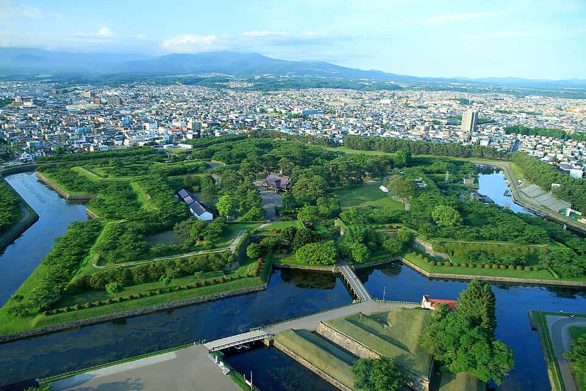
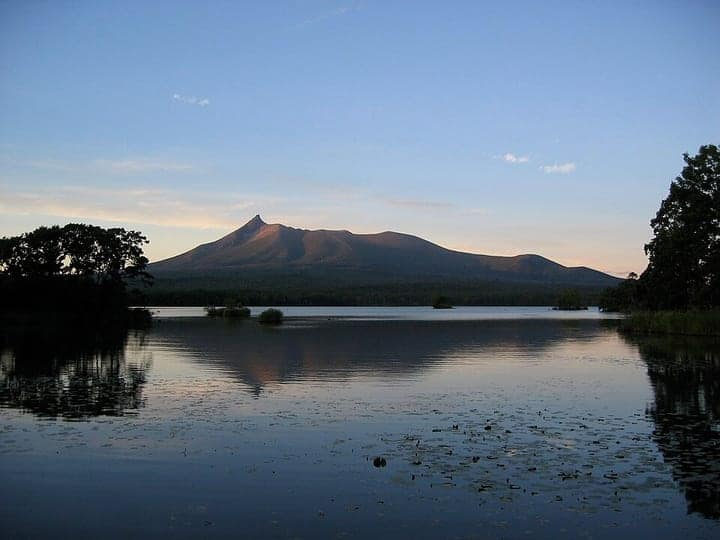
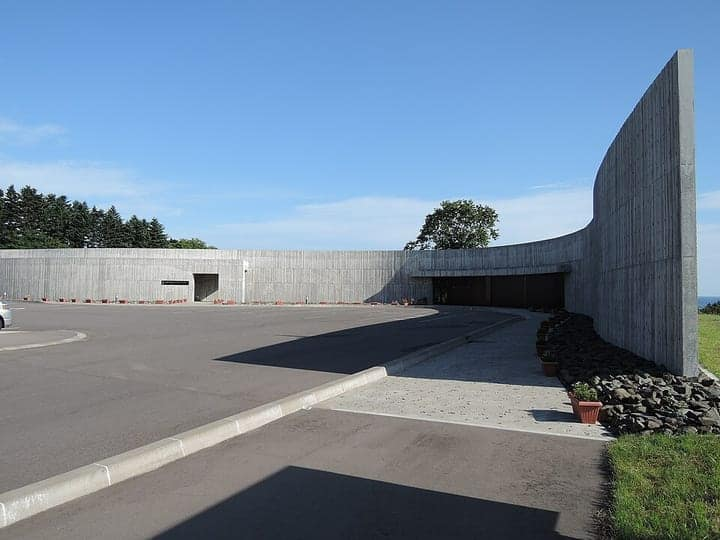

Photo: Keihin nike · CC BY-SA 3.0 · Wikimedia Commons (resized)
1 Must see within Hakodate & Dōnan
Japan's first Western-style fortress, the 1866 star fort where the Republic of Ezo made its last stand — a thousand cherry trees fill the moats in spring.
Look for ★ Anime & pop culture — Detective Conan: The Million-dollar Pentagram (2024 film, set in Hakodate) — the star fort is the key to the film's riddle; ranked No.1 pilgrimage spot in post-release surveys · star fort cherry blossom
Goryōkaku-chō, Hakodate, Hokkaido, Japan
Recommended by japan-guide.com , Wikipedia , Mynavi +2 , @dime (dime.jp, Shogakukan) , Hokkaido Shimbun (北海道新聞)
2 Must see within Hakodate & Dōnan
334 m peak at the tip of the peninsula: a three-minute ropeway to one of Japan's great night views, the city lights pinched between two bays.
Your guide’s note ★ Anime & pop culture — Detective Conan: The Million-dollar Pentagram (2024 film, set in Hakodate) — the summit observatory is where Heiji tries to confess to Kazuha · Love Live! Sunshine!! S2 eps 8–9 night-view scene · night view ropeway
Hakodateyama, Hakodate, Hokkaido, Japan
Recommended by Wikipedia , japan-guide.com , Mynavi +2 , @dime (dime.jp, Shogakukan) , Jalontrip

Photo: jonny-mt · CC BY-SA 3.0 · Wikimedia Commons (resized)
3 Must see within Hakodate & Dōnan
Island-dotted Ōnuma and Konuma ponds under the volcano Hokkaidō-Komagatake — 126 islets linked by bridges, boating and cycling 30 minutes from Hakodate.
Look for lake islands volcano
Ōnuma-chō, Nanae, Kameda District, Hokkaido, Japan
Recommended by Wikipedia , japan-guide.com , Hokkaido Tourism

Photo: アラツク · CC BY-SA 4.0 · Wikimedia Commons (resized)
4 Must see within Hakodate & Dōnan
Home of a National Treasure, the 3,500-year-old hollow clay dogū (41.5 cm) found by chance in 1975 — beside the UNESCO Kakinoshima site.
Look for national treasure dogu jomon
551-1 Usujiri-chō, Hakodate, Hokkaido, Japan
Recommended by Hokkaido Tourism , Hakodatetravel , Wikipedia (Japanese)
5 Must see within Hakodate & Dōnan · Ramen
Founded 1930, the name in Hakodate shio ramen: a clear broth of southern-Dōnan kelp with pork and chicken bone and rock salt. Tabelog Ramen Hokkaido 100.
Goryōkaku area, Hakodate, Hokkaido, Japan
Recommended by Tabelog 百名店 (Hyakumeiten) annual selections , Hokkaido Tourism , Ramen Adventures (Brian MacDuckston)
6 Must see within Hakodate & Dōnan · International
Hakodate's grand Western restaurant since 1879 — Russian dishes from its founding days, classic French, and the curry that made its name.
4-5 Suehiro-chō, Hakodate, Hokkaido 040-0053, Japan (Gotōken head office / honten)
Recommended by rurubu&more. (JTB Publishing) , Wikipedia (Japanese) , Mapple (Shobunsha) — まっぷるトラベルガイド
7 Must see within Hakodate & Dōnan · Ramen
A 1947 shio-ramen counter still cutting noodles daily on its original machine from flour, kansui, salt and egg — closes when the soup runs out.
Matsukaze-chō 7-12, Hakodate, Hokkaido, Japan
Recommended by Mapple (Shobunsha) — まっぷるトラベルガイド , rurubu&more. (JTB Publishing) , Ramen Adventures (Brian MacDuckston)
8 Must see within Hakodate & Dōnan · Hokkaido seafood
A roadside station built around a geyser that blows about 15 m every 10–15 minutes — buy seafood and vegetables and steam them yourself in the hot-spring steam, then Shikabe cod roe at the Hama no Kaa-san canteen.
Shikabe, Kayabe District, Hokkaido, Japan
Recommended by Hokkaido Tourism , rurubu&more. (JTB Publishing) , Wikipedia (Japanese)
9 Must see within Hakodate & Dōnan
The slope-side former foreign settlement — churches, the Old British Consulate, the Chinese Memorial Hall and the Old Public Hall of Hakodate Ward on stepped streets down to the harbour.
Look for foreign settlement churches slopes
Motomachi, Hakodate, Hokkaido, Japan
Recommended by japan-guide.com , Wikipedia
10 Must see within Hakodate & Dōnan · Sushi
The morning-market donburi counter since 1956 — choose three of uni, ikura, scallop, salmon, botan shrimp and snow crab over rice cooked on charcoal. Opens 05:00 in season.
Hakodate Morning Market, Wakamatsu-chō, Hakodate, Hokkaido, Japan
Recommended by rurubu&more. (JTB Publishing) , Mapple (Shobunsha) — まっぷるトラベルガイド
11 Must see within Hakodate & Dōnan · Izakaya
Twenty-six tiny bars and kitchens on 800 m² in the Daimon nightlife quarter by Hakodate Station — the city's hashigo-zake circuit.
Daimon district near JR Hakodate Station, Hakodate, Hokkaido, Japan
Recommended by rurubu&more. (JTB Publishing) , Mapple (Shobunsha) — まっぷるトラベルガイド
12 Must see within Hakodate & Dōnan · Teishoku
A diner in a converted Taishō-era post office that nearly every Hakodate local has eaten at — the Cisco rice was the owner's riff on chili beans from his time in America.
Bay area below Mt Hakodate (Motomachi side), Hakodate, Hokkaido, Japan
Recommended by rurubu&more. (JTB Publishing) , Mapple (Shobunsha) — まっぷるトラベルガイド
13 Must see within Hakodate & Dōnan · Wagashi
Founded in 1905: unskewered dumplings laid in a box to echo the lakes and their ~126 islets, in bean paste and soy.
Ōnuma, Nanae, Kameda District, Hokkaido, Japan
Recommended by rurubu&more. (JTB Publishing) , Mapple (Shobunsha) — まっぷるトラベルガイド
14 Must see within Hakodate & Dōnan · Sushi
The Morning Market hall with the squid-fishing tank — hook a live squid and the stallholder slices it into translucent sashimi with ginger soy at the table.
Hakodate Morning Market, by JR Hakodate Station, Hakodate, Hokkaido, Japan
Recommended by Hakodatetravel , rurubu&more. (JTB Publishing)
15 Must see within Hakodate & Dōnan · Sushi
A Yunokawa sushi counter whose chef grew up in a fishing family and buys the day's best catch — serious sushi without ceremony.
Yunokawa Onsen area, Hakodate, Hokkaido, Japan
Recommended by Hakodatetravel , rurubu&more. (JTB Publishing)
16 Worth the detour within Hakodate & Dōnan
The observation tower beside the fort — the only way to see Goryōkaku's five-pointed star from above.
Your guide’s note ★ Anime & pop culture — Golden Kamuy (2026 Hakodate collab: announcements by Hijikata's voice actor Nakata Jōji) · Love Live! Sunshine!! S2 ep 8 glass-floor scene · observation tower star fort
Goryōkaku-chō, Hakodate, Hokkaido, Japan
Recommended by Wikipedia (Japanese) , japan-guide.com , Hokkaido Shimbun (北海道新聞) +3 , Jalontrip , @dime (dime.jp, Shogakukan) , Mapple (Shobunsha) — まっぷるトラベルガイド
17 Worth the detour within Hakodate & Dōnan
The straight, stone-curbed slope that runs from Motomachi straight down to the harbour — Hakodate's most photographed view, lit up in winter.
Your guide’s note ★ Anime & pop culture — Love Live! Sunshine!! — Aqours walk Hachimanzaka in S2 eps 8–9 (Hakodate arc) · slope harbour view
Motomachi, Hakodate, Hokkaido, Japan
Recommended by Hokkaido Tourism , japan-guide.com , Jalontrip +3 , Toretabi , Mapple (Shobunsha) — まっぷるトラベルガイド , Mynavi
18 Worth the detour within Hakodate & Dōnan · International
The 1987 original of Hakodate's own burger chain (17 shops in the city), done up as a merry-go-round in a forest — the No. 1 Chinese Chicken Burger, sweet-spicy karaage with house mayo, never made ahead.
Your guide’s note ★ Anime & pop culture — Love Live! Sunshine!! — appears in the S2 Hakodate arc; a point on the official Aqours × Saint Snow AR digital stamp rally (11 Hakodate spots)
Bay Area waterfront, Hakodate, Hokkaido, Japan
Recommended by Hokkaido Tourism , japan-guide.com , rurubu&more. (JTB Publishing) +3 , Hakodatetravel , Impress Travel Watch , Jalontrip
19 Worth the detour within Hakodate & Dōnan
1909 harbour warehouses (founded 1887) turned shops, beer hall and event space in 1988 — Hakodate's waterfront landmark.
Your guide’s note ★ Anime & pop culture — Love Live! Sunshine!! — Hakodate pilgrimage stop from the S2 Hakodate arc · red brick warehouse bay
Suehiro-chō, Hakodate, Hokkaido, Japan
Recommended by Wikipedia , Hokkaido Tourism , Jalontrip +1 , @dime (dime.jp, Shogakukan)
20 Worth the detour within Hakodate & Dōnan
Built by the Edo shogunate in the late Edo period inside Goryōkaku to oversee northern defence and foreign affairs; restored on its original site.
Look for ★ Anime & pop culture — Golden Kamuy — Hijikata Toshizō photo panel and two character goshuin-style castle stamps in the 2026 'Golden Kamuy — Hakodate Dyed in Gold' collaboration · magistrate office reconstruction
Goryōkaku Park, Goryōkaku-chō, Hakodate, Hokkaido, Japan
Recommended by Hokkaido Tourism , Wikipedia (Japanese) , Hokkaido Shimbun (北海道新聞) +1 , The place's / franchise's own official site
21 Worth the detour within Hakodate & Dōnan
250-odd stalls across the street from Hakodate Station — squid you fish yourself, crab, uni and ikura donburi for breakfast.
Look for ★ Anime & pop culture — Detective Conan: The Million-dollar Pentagram (2024 film, set in Hakodate) — No.4 in the film's pilgrimage-spot ranking · morning market seafood
Wakamatsu-chō, Hakodate, Hokkaido, Japan
Recommended by japan-guide.com , Wikipedia , @dime (dime.jp, Shogakukan)
22 Worth the detour within Hakodate & Dōnan
A Middle Jōmon village above the Pacific — more than 100 pit-dwelling hollows, some 2 m deep, part of the 2021 UNESCO Jōmon Prehistoric Sites in Northern Japan.
Look for jomon site
Ōfune-chō, Hakodate, Hokkaido, Japan
Recommended by UNESCO World Heritage Centre , Jomonjapan , Wikipedia (Japanese)
23 Worth the detour within Hakodate & Dōnan
A settlement where living and burial grounds were separated for millennia, with a 190 m U-shaped earthen mound; the Hakodate Jōmon Culture Center (with Hokkaido's only National Treasure, a hollow clay dogū) is beside it. UNESCO.
Look for jomon site
Usujiri-chō, Hakodate, Hokkaido, Japan
Recommended by UNESCO World Heritage Centre , Jomonjapan , Wikipedia (Japanese)
24 Worth the detour within Hakodate & Dōnan
The blue-grey and yellow 1910 colonial-style assembly hall looking over the port from the top of Motoizaka — an Important Cultural Property.
Look for meiji hall view
Motomachi, Hakodate, Hokkaido, Japan (top of Motoizaka slope)
Recommended by Wikipedia (Japanese) , Hokkaido Tourism , japan-guide.com
25 Worth the detour within Hakodate & Dōnan
A 30 m cliff on the south side of Mount Hakodate jutting into the Tsugaru Strait — on clear days the Shimokita and Tsugaru peninsulas of Aomori across the water.
Look for cape strait view
South side of Mount Hakodate, Hakodate, Hokkaido, Japan
Recommended by Hakodatetravel , Hokkaido Tourism , Wikipedia (Japanese)
26 Worth the detour within Hakodate & Dōnan
A still-steaming 618 m active volcano at the eastern tip of the Kameda Peninsula — trails from the 300 m crater-floor car park, and some 600,000 wild Ezo azaleas around Esan Tsutsuji Park.
Look for active volcano azaleas
Esan area, Hakodate, Hokkaido, Japan
Recommended by Hokkaido Tourism , rurubu&more. (JTB Publishing) , Wikipedia (Japanese)
27 Worth the detour within Hakodate & Dōnan
The 1,131 m active volcano that symbolises southern Hokkaido — once a Fuji-like cone, its summit collapsed in the 1640 eruption, leaving jagged peaks such as Kengamine; climbable June–October.
Look for volcano hike
Mori, Kayabe District, Hokkaido, Japan
Recommended by Hokkaido Tourism , rurubu&more. (JTB Publishing) , Wikipedia (Japanese)
28 Worth the detour within Hakodate & Dōnan
A Seikan rail ferry retired in 1988 and moored as a museum 5 minutes from Hakodate Station — bridge and radio room kept as they sailed.
12 Wakamatsu-chō, Hakodate, Hokkaido, Japan
Recommended by Hakodatetravel , Hokkaido Tourism , Wikipedia (Japanese)
29 Worth the detour within Hakodate & Dōnan
Merchant Sōma Teppei's 1908 Japanese-Western house beside the Old Public Hall he paid for — an Important Cultural Property with a kura gallery of Esashi screens.
Look for merchant mansion (ICP)
Motomachi, Hakodate, Hokkaido, Japan
Recommended by Agency For Cultural Affairs , Hakodatetravel , Wikipedia (Japanese)
30 Worth the detour within Hakodate & Dōnan · Hokkaido seafood
Route 5 roadside station of Mori, home of ikameshi — the squid-rice ekiben sold here in many forms, with Komagatake and Uchiura Bay from the roof lounge.
Kamidai-chō 326-18, Mori, Kayabe District, Hokkaido, Japan
Recommended by rurubu&more. (JTB Publishing) , Hokkaidomichinoeki , Wikipedia (Japanese)
31 Worth the detour within Hakodate & Dōnan · Hokkaido seafood
Clifftop roadside station on the Tsugaru Strait serving bowls of wild bluefin from the same waters as Ōma tuna, and Matsumae-zuke, the clan-era pickle of herring roe, kelp and squid.
Matsumae, Matsumae District, Hokkaido, Japan
Recommended by rurubu&more. (JTB Publishing) , Hokkaidomichinoeki , Wikipedia (Japanese)
32 Worth the detour within Hakodate & Dōnan · Wagashi
Esashi's 1870 confectioner, whose cylindrical azuki yōkan — sliced with the string on the tube — was presented to the Shōwa Emperor in 1936.
Honchō 38, Esashi, Hiyama District, Hokkaido, Japan
Recommended by Hokkaido Tourism , rurubu&more. (JTB Publishing) , Wikipedia (Japanese)
33 Worth the detour within Hakodate & Dōnan
Japan's first Orthodox parish (consecrated 1860); the 1916 white church with green copper domes is an Important Cultural Property.
Look for orthodox church
Motomachi, Hakodate, Hokkaido, Japan
Recommended by Wikipedia , japan-guide.com
34 Worth the detour within Hakodate & Dōnan
Japan's northernmost castle, seat of the only Edo-period domain on Hokkaido — its park is one of the island's great cherry-blossom spots, thousands of trees in 250 varieties.
Look for castle cherry blossom
Matsushiro, Matsumae, Matsumae District, Hokkaido, Japan
Recommended by Wikipedia , japan-guide.com
35 Worth the detour within Hakodate & Dōnan
Hokkaido's largest stone circle (Late Jōmon), a double ring of stones on a hill above Uchiura Bay — an associated site of the Jōmon World Heritage nomination.
Look for stone circle jomon
Washinoki-chō, Mori, Kayabe District, Hokkaido, Japan
Recommended by Jomonjapan , Wikipedia (Japanese)
36 Worth the detour within Hakodate & Dōnan
The British consulate building of Hakodate's treaty-port era in Motomachi, now a city-run museum of the port's opening.
Look for consulate museum garden
Motomachi, Hakodate, Hokkaido, Japan
Recommended by Wikipedia (Japanese) , japan-guide.com
37 Worth the detour within Hakodate & Dōnan
Hakodate's seaside hot-spring quarter, one of Hokkaido's three great onsen areas, with a history going back to 1653.
Look for onsen town sea
Yunokawa-chō, Hakodate, Hokkaido, Japan
Recommended by Wikipedia (Japanese) , Hokkaido Tourism
38 Worth the detour within Hakodate & Dōnan
Founded 1859 by the French missionary Mermet-Cachon and rebuilt in Gothic style in 1924 — its altar is the only one in Japan given by a Pope.
Look for gothic church
15-30 Motomachi, Hakodate, Hokkaido 040-0054, Japan
Recommended by Hokkaido Tourism , Wikipedia (Japanese)
39 Worth the detour within Hakodate & Dōnan
Ainu and Okhotsk-coast peoples' clothing, tools and ritual objects — try Ainu paper-cutting or make and play traditional instruments.
Look for ainu northern peoples museum
21-7 Suehiro-chō, Hakodate, Hokkaido 040-0053, Japan
Recommended by Hakodatetravel , Wikipedia (Japanese)
40 Worth the detour within Hakodate & Dōnan
Japan's first men's monastery (1896).
Look for monastery avenue
Mitsuishi (Oshima-Tōbetsu), Hokuto, Hokkaido, Japan
Recommended by Hokkaido Tourism , Wikipedia (Japanese)
41 Worth the detour within Hakodate & Dōnan
A full-size replica of the shogunate's Dutch-built flagship that sank off Esashi in a storm in 1868, moored at the entrance to Kamome Island in the herring-trade port.
Look for warship replica island
Esashi, Hiyama District, Hokkaido, Japan
Recommended by Hokkaido Tourism , Wikipedia (Japanese)
42 Worth the detour within Hakodate & Dōnan
A pyramid greenhouse of tropical plants at Yunokawa — famous for the Japanese macaques soaking in their own hot-spring pool from December to May.
Look for monkeys onsen greenhouse
3-1-15 Yunokawa-chō, Hakodate, Hokkaido 042-0932, Japan
Recommended by Hokkaido Tourism , Wikipedia (Japanese)
43 Worth the detour within Hakodate & Dōnan
Japan's first women's monastery — a 1927 Gothic-Romanesque brick church on the hills above Yunokawa, 35 minutes by bus from Hakodate Station.
346 Kamiyunokawa-chō, Hakodate, Hokkaido, Japan
Recommended by Hakodatetravel , Wikipedia (Japanese)
44 Worth the detour within Hakodate & Dōnan · Hokkaido seafood
Restaurant of a sea-urchin wholesaler that long supplied Tsukiji and top sushi counters — sweet, additive-free raw uni in bowls and set meals.
Morning-market streets, Hakodate, Hokkaido, Japan (5 min walk from Hakodate Station)
Recommended by Hakodatetravel , Mapple (Shobunsha) — まっぷるトラベルガイド
45 Worth the detour within Hakodate & Dōnan · Ramen
A Daimon-district veteran whose pale, clear shio broth is nine parts pork bone to one part chicken.
Matsukaze-chō 5-13, Hakodate, Hokkaido, Japan
Recommended by Mapple (Shobunsha) — まっぷるトラベルガイド , rurubu&more. (JTB Publishing)
46 Worth the detour within Hakodate & Dōnan · Sushi
A Donburi Yokochō counter piling sea urchin, salmon roe and scallop over rice from 7am.
Donburi Yokochō Ichiba, Wakamatsu-chō 9-15, Hakodate, Hokkaido, Japan
Recommended by rurubu&more. (JTB Publishing) , Hakodateasaichi
47 Worth the detour within Hakodate & Dōnan · Sushi
The early opener of Donburi Yokochō — seafood bowls from 6am, open every day.
Donburi Yokochō Ichiba, Wakamatsu-chō 9-15, Hakodate, Hokkaido, Japan
Recommended by rurubu&more. (JTB Publishing) , Hakodateasaichi
48 Worth the detour within Hakodate & Dōnan · Sushi
A Donburi Yokochō shokudō of seafood bowls and grilled fish for the market's breakfast crowd.
Donburi Yokochō Ichiba, Wakamatsu-chō 9-15, Hakodate, Hokkaido, Japan
Recommended by rurubu&more. (JTB Publishing) , Hakodateasaichi
49 Worth the detour within Hakodate & Dōnan · Sake
The city's brewery restaurant on Kaikō-dōri — six regular beers on tap and a menu running from seafood to meat.
Kaikō-dōri, Ōte-machi 5-22, Hakodate, Hokkaido, Japan
Recommended by rurubu&more. (JTB Publishing) , Mapple (Shobunsha) — まっぷるトラベルガイド
50 Worth the detour within Hakodate & Dōnan · Sake
A retro beer hall inside the Kanemori red-brick warehouses — two local beers, long sausage pie and potato-cheese bakes.
Kanemori Red Brick Warehouse — Hakodate History Plaza, Hakodate, Hokkaido, Japan
Recommended by rurubu&more. (JTB Publishing) , Hakodatetravel
51 Worth the detour within Hakodate & Dōnan · Wagashi
Nanae's food-and-history station, in the birthplace of Western-style farming in Japan — guaraná soft-serve from the local soda maker and croquettes of Yamakawa ranch beef.
Nanae, Kameda District, Hokkaido, Japan
Recommended by rurubu&more. (JTB Publishing) , Wikipedia (Japanese)
52 Worth the detour within Hakodate & Dōnan · Wagashi
The roadside station at the first Hokkaido Shinkansen stop — sweets and bread built on the salt of Kikonai's midwinter Kanchū Misogi festival, and the town's own sake.
At JR Kikonai Station (Hokkaido Shinkansen), Kikonai, Kamiiso District, Hokkaido, Japan
Recommended by Hokkaido Tourism , Wikipedia (Japanese)
53 Worth the detour within Hakodate & Dōnan · Sake
One of Hokkaido's pioneer wineries (1973): about 80 wines on the shelves, a dozen to taste free, and a wine soft-serve sold only here.
Kamifujishiro 11, Nanae, Kameda District, Hokkaido, Japan
Recommended by Hokkaido Tourism , Wikipedia (Japanese)
54 Worth the detour within Hakodate & Dōnan · Izakaya
Goryōkaku-side live-seafood house built around Hakodate's squid: the tank-fresh ma-ika is cut to order as glassy ikasōmen-style sashimi.
Honchō 2-14, Hakodate, Hokkaido, Japan
Recommended by rurubu&more. (JTB Publishing) , Mapple (Shobunsha) — まっぷるトラベルガイド
55 Worth the detour within Hakodate & Dōnan · Wagyu
A 1901 beef shop turned sukiyaki specialist in an early-Shōwa building — black wagyu at fair prices, a limited weekday lunch, and croquettes from the ground-floor butcher.
Hōrai-chō 10-11, Hakodate, Hokkaido, Japan (on Asari-zaka)
Recommended by rurubu&more. (JTB Publishing) , Hakodatetravel
56 Worth the detour within Hakodate & Dōnan · Ramen
Yunokawa's shio-ramen specialist — a double soup of whole chicken and Minami-kayabe kombu, clam and shijimi essence in the salt tare, and its own thin straight noodles.
Yunokawa-chō, Hakodate, Hokkaido, Japan
Recommended by rurubu&more. (JTB Publishing) , Mapple (Shobunsha) — まっぷるトラベルガイド
57 Worth the detour within Hakodate & Dōnan · Kissaten
The English tearoom inside the 1913 Former British Consulate — antiques shipped from Britain, scones and a full afternoon-tea stand in Motomachi.
33-14 Motomachi, Hakodate, Hokkaido, Japan
Recommended by rurubu&more. (JTB Publishing) , Mapple (Shobunsha) — まっぷるトラベルガイド
58 Worth the detour within Hakodate & Dōnan · International
Founded 1948, Hakodate's old-school curry house — a sharply spiced, nostalgic roux that locals rank beside Gotōken's.
22-5 Hōrai-chō, Hakodate, Hokkaido, Japan
Recommended by rurubu&more. (JTB Publishing) , Mapple (Shobunsha) — まっぷるトラベルガイド
59 Worth the detour within Hakodate & Dōnan · Markets
The locals' and chefs' market rather than the tourists' — sushi chefs buy here; fish stalls will slice what you pick, plus a shokudō and food court.
1-2 Shinkawa-chō, Hakodate, Hokkaido, Japan
Recommended by rurubu&more. (JTB Publishing) , Mapple (Shobunsha) — まっぷるトラベルガイド
60 Worth the detour within Hakodate & Dōnan · Markets
The Morning Market's canteen arcade — a covered lane of donburi shokudō open from dawn into lunch, the place for kaisendon by Hakodate Station.
Wakamatsu-chō, Hakodate, Hokkaido, Japan (inside Hakodate Morning Market)
Recommended by rurubu&more. (JTB Publishing) , Mapple (Shobunsha) — まっぷるトラベルガイド
61 Deep cut within Hakodate & Dōnan · Hokkaido seafood
Sea-of-Japan roadside station whose restaurant window looks over the water; the signature is a tendon of local flounder.
Kaminokuni, Hiyama District, Hokkaido, Japan
Recommended by rurubu&more. (JTB Publishing) , Mapple (Shobunsha) — まっぷるトラベルガイド , Hokkaidomichinoeki +1 , Wikipedia (Japanese)
62 Deep cut within Hakodate & Dōnan
Hakodate's arena by Yunokawa Onsen — the Love Live! regional-preliminary venue in Sunshine!! S2 and the real home of the 2018 Saint Snow-hosted Hakodate Unit Carnival.
Your guide’s note ★ Anime & pop culture — Love Live! Sunshine!! — the Hakodate venue of the S2 regional preliminaries (Saint Snow's home city) · arena · anime pilgrimage
Yunokawa-chō 1-32-2, Hakodate, Hokkaido, Japan
Recommended by ANIMETOURISM88 , Wikipedia (Japanese) , 4Gamer.net
63 Deep cut within Hakodate & Dōnan
Southern Hokkaido's prefectural art museum next to Goryōkaku Park — a collection of over 2,500 works built on three themes: Dōnan art, calligraphy and contemporary art.
Look for art museum
Beside Goryōkaku Park, Hakodate, Hokkaido, Japan
Recommended by Hokkaido Tourism , rurubu&more. (JTB Publishing) , Wikipedia (Japanese)
64 Deep cut within Hakodate & Dōnan
On the campus of the first girls' school north of Tokyo (1882) — the clapboard missionary house and main hall are Important Cultural Properties, opened on set days.
Look for Meiji mission school (ICP)
Suginami-chō, Hakodate, Hokkaido, Japan
Recommended by Agency For Cultural Affairs , Mapple (Shobunsha) — まっぷるトラベルガイド , Wikipedia (Japanese)
65 Deep cut within Hakodate & Dōnan
A Meiji-era 4.8 ha park with an Ishikawa Takuboku poem stone, the city museum and Hokkaido's first stone bridge (about 10 m).
Look for meiji park
Hakodate, Hokkaido, Japan
Recommended by Mapple (Shobunsha) — まっぷるトラベルガイド , Wikipedia (Japanese)
66 Deep cut within Hakodate & Dōnan
A four-pointed earthwork fort thrown up in days by ~300 Republic of Ezo soldiers and locals in 1869 to shield Goryōkaku — a national historic site park 3 km north.
Look for Boshin War fort
Kamiyama-chō, Hakodate, Hokkaido, Japan
Recommended by Hokkaido Tourism , Wikipedia (Japanese)
67 Deep cut within Hakodate & Dōnan · Markets
A big Bay-area seafood market of crab, squid and roe for tasting and shipping home.
Bay area, Hakodate, Hokkaido, Japan
Recommended by Hakodatetravel , rurubu&more. (JTB Publishing)